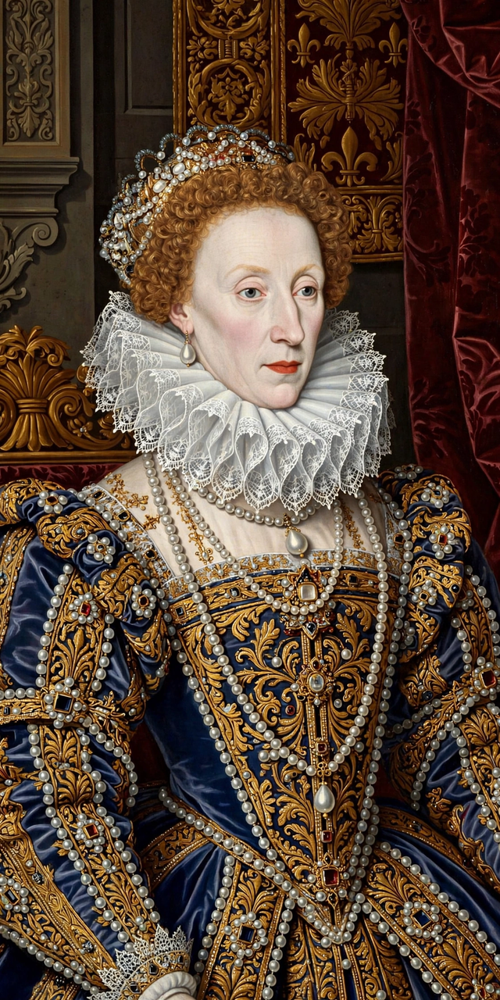

| Period | 17 November 1558 – 24 March 1603 |
|---|---|
| Monarch | Elizabeth I |
| Preceded by | Tudor period (Mary I) |
| Followed by | Jacobean era |
| Key events | English Renaissance; defeat of the Spanish Armada (1588); Elizabethan Religious Settlement; flourishing of English drama |
The Elizabethan era is the epoch in the Tudor period of the history of England during the reign of Queen Elizabeth I (1558–1603). Historians often depict it as the golden age in English history, symbolising the English Renaissance, which saw the flowering of poetry, music and literature, and is most famous for its drama and theatre.

Elizabeth I, whose 44-year reign gave the era its name.
Elizabeth's government was more structured and effective than that of earlier Tudors, working through the Privy Council and able ministers such as William Cecil, Lord Burghley, and Francis Walsingham. The Elizabethan Religious Settlement established the Church of England on a moderately Protestant footing, enforced by the Acts of Supremacy and Uniformity (1559). Society was strictly hierarchical, and the poor were provided for by the Elizabethan Poor Law of 1601.
The era produced William Shakespeare, Christopher Marlowe, Edmund Spenser, Philip Sidney and Ben Jonson. Public playhouses such as The Theatre and the Globe were built outside the City of London, and companies like the Lord Chamberlain's Men performed to audiences of all classes. Music flourished under composers including Thomas Tallis and William Byrd.
English seafarers such as Francis Drake — the first Englishman to circumnavigate the globe (1577–1580) — and Walter Raleigh challenged Iberian dominance of the seas. War with Spain culminated in the defeat of the Spanish Armada in 1588, though costly campaigns continued in the Netherlands and Ireland until Elizabeth's death in 1603, when she was succeeded by James VI of Scotland.